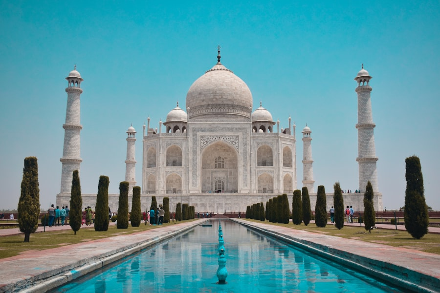
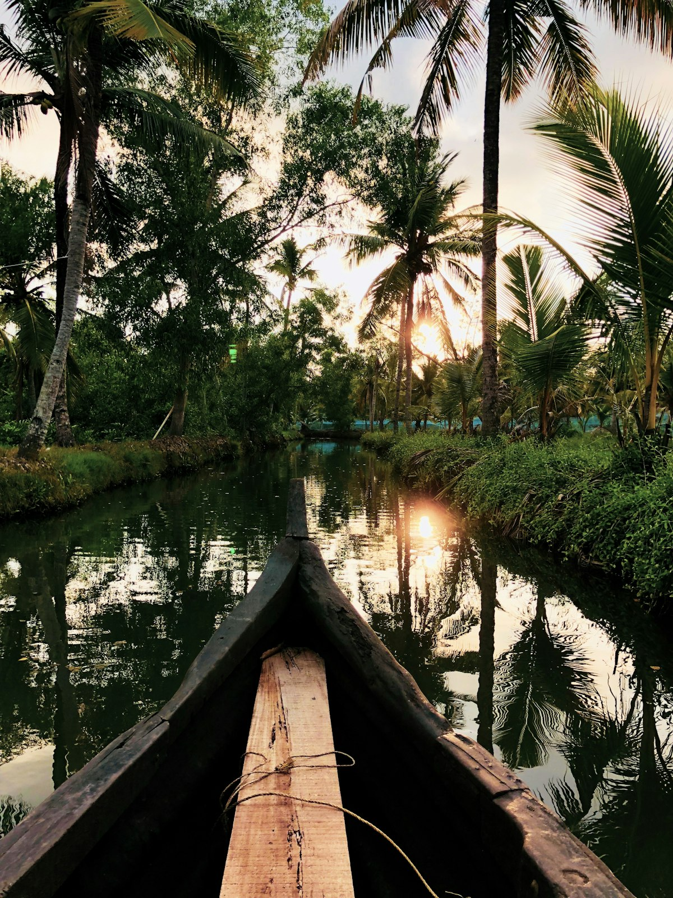
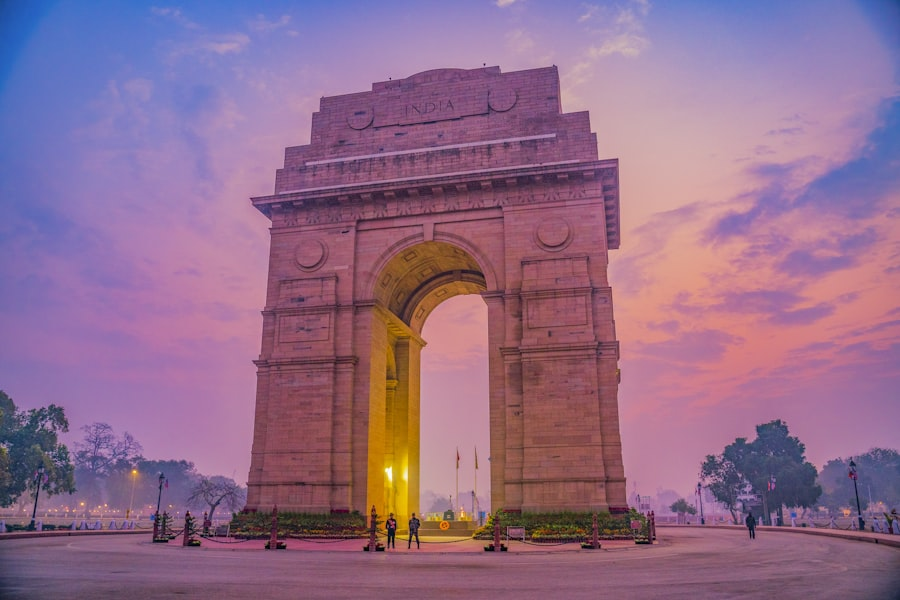

Landmark · 1721
Sun Gate Temple
The city's founding landmark, known for sunrise ceremonies and its stone dome.
See the story →Discover Suryapur's landmarks, culture and community stories — then see the ideas helping the city grow with care.
Suryapur brings museum collections, visitor information and local updates into one welcoming digital space. Follow a family story through the archive, plan an afternoon by the river, or see what is new around the city.
Three landmarks that reveal the stories and traditions of Suryapur.

The city's founding landmark, known for sunrise ceremonies and its stone dome.
See the story →
A restored trading quarter, now filled with artisan studios and local stories.
See the story →
Festival lights, morning walks and generations of memories meet at the water.
See the story →Build a route, see the latest community events or dive into the exhibition gallery.